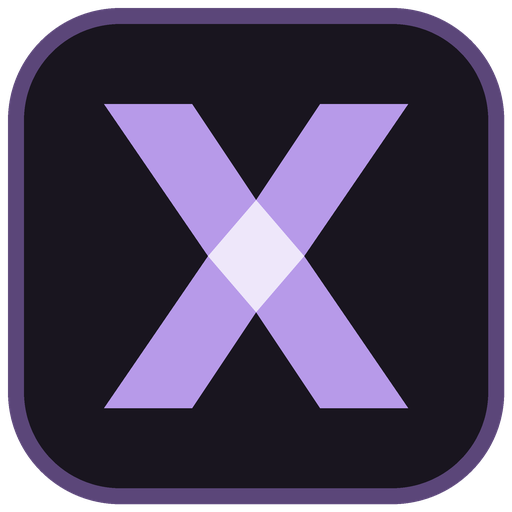

<!doctype html><html lang="fr"><meta charset="utf-8"><meta name="viewport" content="width=device-width,initial-scale=1"><title>XRN — Journal du jeu</title><link rel="icon" href="assets/icon.png"><style>body{margin:0;background:#131017;color:#d7cede;font:12px/1.6 Consolas,monospace;display:flex;flex-direction:column;height:100vh}header{display:flex;align-items:center;gap:20px;padding:18px 22px;border-bottom:1px solid #3b3048;background:#201928}header img{width:30px;height:30px}header strong{font:600 16px 'Segoe UI',sans-serif}header small{display:block;color:#ad9abb;font:11px 'Segoe UI',sans-serif;margin-top:5px}.actions{margin-left:auto;display:flex;gap:8px}button:disabled{opacity:.45;cursor:default}header{flex-wrap:wrap}button{background:#34263f;border:1px solid #69517d;border-radius:6px;padding:7px 12px;color:#e2d3ef;cursor:pointer}pre{flex:1;overflow:auto;margin:0;padding:18px 22px;white-space:pre-wrap;overflow-wrap:anywhere}footer{padding:10px 22px;border-top:1px solid #3b3048;display:flex;justify-content:space-between;color:#ab99b8;font:11px 'Segoe UI',sans-serif}</style><header><div><strong>Journal du jeu</strong><small id="status">Connexion au launcher…</small></div><div class="actions"><button id="cancel">Annuler le lancement</button><button id="pause">Pause</button><button id="copy">Copier</button><button id="clear">Effacer</button></div></header><pre id="output" role="log" aria-label="Journal Minecraft"></pre><footer><span>Un journal neuf à chaque lancement · Jetons masqués</span><span id="count">0 / 2000 lignes</span></footer><script src="diagnostic-window.js"></script></html>
